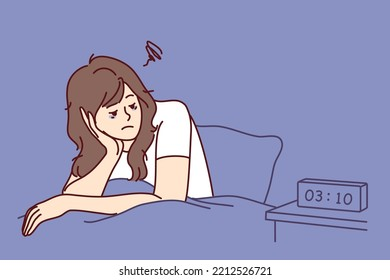
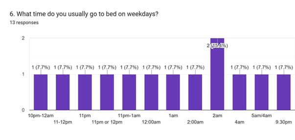
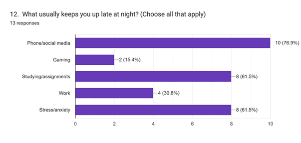
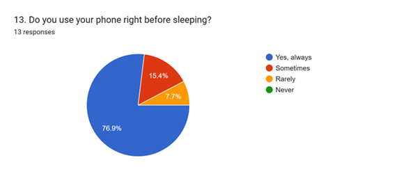

Young People Struggle With Late Nights and Sleepless Habits
KUALA LUMPUR: Late nights on the phone, assignments that last over midnight, and an endless scroll through social media – for many young Malaysians, these have silently replaced bedtime. What was once the simplest part of the day has become something to pursue rather than enjoy. With glowing screens, hefty workloads, and restless brains, sleep has become more of a luxury than a need. .
According to the poll findings, most students and young working adults receive only five to six hours of sleep on weekdays, with some sleeping as late as 2am, 4am, or 5am. One 23-year-old student admitted to waking up at "2pm/3pm" after nights that often lasted until 5am.
When asked what keeps them awake, the answers were familiar: “Phone/social media,” “Studying/assignments,” “Work,” and “Stress/anxiety.” A student explained that the “attraction of smartphone” is hard to resist, while another pointed directly to “academic and lifestyle pressure.”

Screens are frequently the last thing people see before going to bed, with many respondents answering "Yes, always" when asked if they use their phones before sleeping. Some even acknowledged to picking up their phones when they awoke in the middle of the night.
The outcome is predictable: poor quality rest. One responder described their sleep as "very poor," while another stated that they "always" wake up feeling tired after sleeping. Many people admitted that a lack of rest has an impact on their mood and performance. When asked if sleep problems hindered their work, one young working adult responded, "Yes, definitely." Another acknowledged to "feeling sleep-deprived most of the time."
Despite acknowledging the issue, not everyone is taking action. Some tried "reducing screen time," "exercise," or "listening to sleeping songs," but others admitted to doing nothing, with one responder simply saying "No."
When asked what could be helpful, the responses ranged from practical to hopeful: "A consistent academic schedule," "Better time management," "Come home early from work and rest," and even "Find suitable pillows."
Respondents generally agreed that modern life makes sleep difficult. "Yes because scheduling these days are so messed up with classes at odd hours and extracurriculars," an individual responded. Another mentioned "the increasing of screen time." Several emphasized the pressures of city living, stating it as a "fast-paced lifestyle, workload demands," and "too many night activities."
However, some disagreed. "No, because of working and studying," one wrote, while another simply said, "No."
While the solutions appear straightforward — less screen time, better discipline, and healthier routines — putting them into practice is a problem in and of itself. Many people understand what needs to be done, but few are able to break free from late-night scrolling, schoolwork, or work obligations.
For young Malaysians, sleep is about more than just rest; it is also about balance. As the comments show, modern life provides more distractions, more stress, and less time to relax. Until they achieve that balance, many will continue to exchange precious hours of sleep for the pace of today’s fast-moving world.
💬 Comments